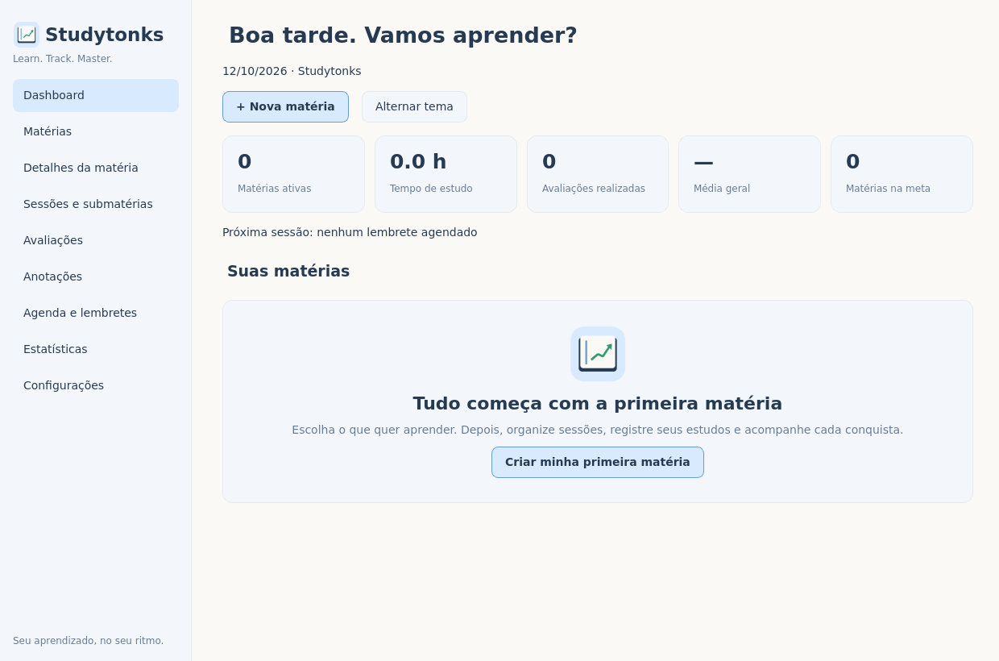

Organize do seu jeito
Matérias, sessões e subsessões em uma árvore simples. Crie o seu plano, defina metas e mantenha tudo no lugar.
Uma estrutura para cada assuntoSeu espaço de estudos. No seu computador.
Das primeiras anotações àquela nota que você queria. Organize seu bootcamp, registre cada conquista e veja seu aprendizado evoluir.
Windows 10 e 11 · 64 bits Sem conta. Sem mensalidade.
Learn. Track. Master.
MAIS CLAREZA, MENOS DISTRAÇÃO
Uma rotina de estudos tem muitas partes. O Studytonks mantém todas conectadas, para você se concentrar no que está aprendendo.

Matérias, sessões e subsessões em uma árvore simples. Crie o seu plano, defina metas e mantenha tudo no lugar.
Uma estrutura para cada assuntoRegistre avaliações por pontos ou porcentagem. Gráficos interativos mostram notas, tendências e a distância para sua meta.
Cada avaliação conta uma vezAnote com títulos, listas, negrito e trechos de código. O salvamento automático acompanha o seu raciocínio.
Anotações ligadas às subsessõesInicie o cronômetro, pause quando precisar e salve o tempo estudado. Acompanhe as horas por semana e por mês.
Pausas ficam fora da contagemMonte bootcamps com metas de horas e aprovação. Use a agenda e os lembretes do Windows para manter o ritmo.
Lembretes com o app em execuçãoTudo fica em arquivos locais. Exporte backups ZIP, restaure quando precisar e atualize o aplicativo preservando seu histórico.
Sem cadastro ou sincronização na nuvemDO DOWNLOAD AO PRIMEIRO ESTUDO
O instalador reúne o aplicativo e as bibliotecas necessárias. Você não precisa instalar Python ou executar comandos.
Escolha a versão para Windows 10 ou 11, 64 bits. Salve Studytonks-Setup.exe no seu computador.
Abra o arquivo, escolha a pasta e conclua a instalação. As dependências já estão no pacote; a instalação funciona offline.
Dê um nome, organize os assuntos e comece a estudar. Seu histórico cresce com as anotações, horas e notas que você registrar.
SEU PRÓXIMO CAPÍTULO
Windows 10 / 11 · x64 · Gratuito · Sem conta
Instalador em preparação · confira as versões publicadas.
Baixar arquivos do projeto (.zip) Prefere não instalar? Baixe a versão portátilA disponibilidade do instalador é confirmada pela publicação no GitHub. O código-fonte está aberto para você consultar .
ANTES DE COMEÇAR
Algumas respostas para você instalar com tranquilidade.
Documentação no GitHubPara usar a versão compilada, não. O instalador inclui Python, Qt e as bibliotecas do aplicativo. Depois de baixar o arquivo, a instalação e o uso funcionam offline. Python só é necessário se você quiser executar ou modificar o código-fonte.
No seu computador, em %APPDATA%\Studytonks\. Os dados ficam separados do executável. Você pode abrir essa pasta pelas Configurações, criar backups e exportar um ZIP. Não existe conta, servidor ou banco de dados na nuvem.
Sim. Os lembretes locais exigem o aplicativo em execução, inclusive minimizado na bandeja. Se você sair completamente, ele não enviará notificações. O Windows pode silenciá-las conforme suas preferências. Iniciar com o Windows é uma opção que só é ativada com sua autorização.
Crie um backup nas Configurações e instale a versão mais recente. Seus arquivos continuam em %APPDATA%\Studytonks\, fora da pasta do programa. A desinstalação também preserva essa pasta. Guarde seus backups em um local seguro: eles não são criptografados.
O instalador configura a pasta do programa e os atalhos, com opção de desinstalação. Na versão portátil, você extrai o ZIP e abre Studytonks.exe; mantenha todos os arquivos da pasta juntos. Ambos incluem as dependências e salvam os dados na mesma pasta do usuário.
Uma versão sem assinatura digital ou com poucos downloads pode acionar o SmartScreen. Confira a origem na página oficial do projeto e o checksum da versão antes de decidir executar. Não é necessário desativar a proteção do Windows.